| ID | 問題 | 答え | 解説 |
|---|---|---|---|
| Lv02_Ca014_0001 | 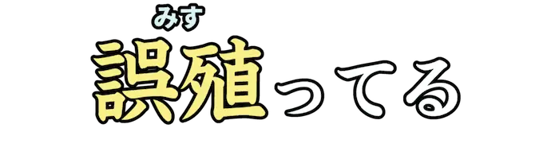 |
みす | 答えが出てしまっている。 |
| Lv02_Ca014_0002 | 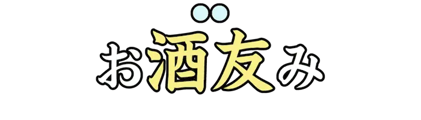 |
つま | 酒を飲むとき、一緒に食べる軽食。 |
| Lv02_Ca014_0003 | しゃつ | 丸首で半袖のシャツ。 | |
| Lv02_Ca014_0004 | いちごみるく | イチゴ味と牛乳を混ぜ合わせた味のする食べ物や、飲み物のこと。 | |
| Lv02_Ca014_0005 | しーすー | 『寿司』を反対に読んだ業界用語のひとつ。 | |
| Lv02_Ca014_0006 | よわ | 『<強|つよ>ち』の対義語。よわっちょである。また、そのような人。 | |
| Lv02_Ca014_0007 | てえてえ | 作品への『好き』を示す感情表現のひとつ。『ＴＴ』とも。 | |
| Lv02_Ca014_0008 | 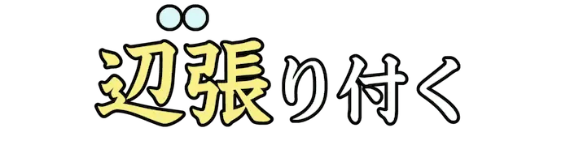 |
へば | 漢字表記を探したところ、ありそうでなくてビックリしたとされる。 |
| Lv02_Ca014_0009 | がっこう | 地図記号のひとつ。小学校や中学校を表す。 | |
| Lv02_Ca014_0010 | 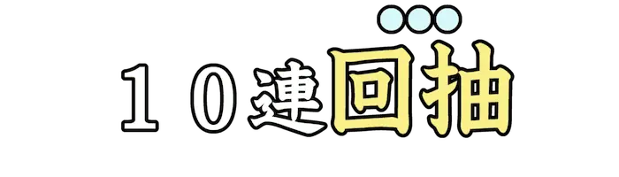 |
がちゃ | 特別なアイテムやキャラクターなどを十回続けて得るためのゲームシステム。 |
| Lv02_Ca014_0011 | こんたくとれんず | 角膜に接触させて使う、レンズ状の器具。『 |
|
| Lv02_Ca014_0012 | まうす | コンピュータの入力装置のひとつ。操作感度の単位は『ミッキー』。ははっ。 | |
| Lv02_Ca014_0013 | 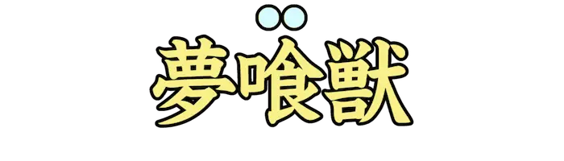 |
ばく | 『<麒麟|きりん>』みたいに、実在する生物の方もいるものの、今回は架空の生物あっ文字数が… |
| Lv02_Ca014_0014 | じぐそーぱずる | バラバラになったピースを組み合わせて一枚絵を完成させる遊び。 | |
| Lv02_Ca014_0015 | 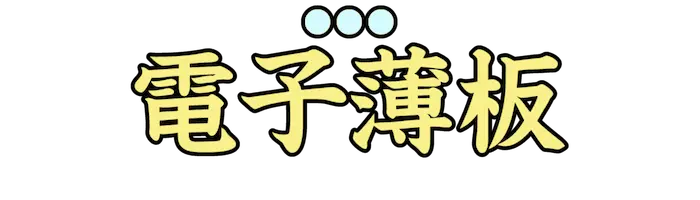 |
すまほ | スマートフォンの略。パソコンと同等の機能を備えている携帯電話類の総称。 |
| Lv02_Ca014_0016 | 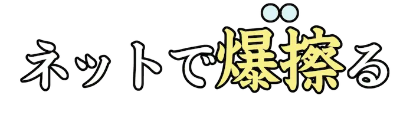 |
ばず | インターネットやSNS上で、多くの人から注目を浴びること。 |
| Lv02_Ca014_0017 | 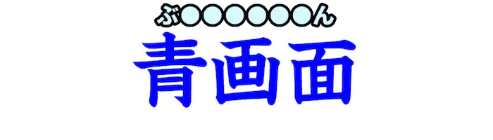 |
ぶるーすくりーん | PCに致命的な問題が出たとき、青い背景と白い文字が突如として表示される現象。 |
| Lv02_Ca014_0018 | 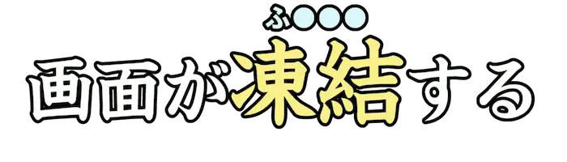 |
ふりーず | 凍り付いて動かなくなること。転じて、突然コンピュータが動作しなくなること。 |
| Lv02_Ca014_0019 | ぼっち | ひとりぼっちも悪くないよ。 | |
| Lv02_Ca014_0020 | ぴあの | 鍵盤楽器のひとつ。鍵に連動したハンマーが対応する弦を叩き、美しき<旋律|メロディ>を奏でる。 | |
| Lv02_Ca014_0021 | たばこ | ナス目ナス科の一年草および多年草。また、その葉を加工して作られる製品。 | |
| Lv02_Ca014_0022 | 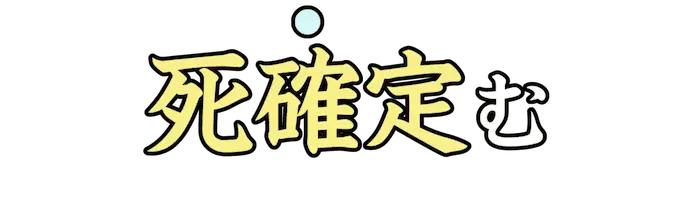 |
つ | 若者言葉で、絶望的な状況に陥ることを表す語。将棋用語の『詰む』が由来。 |
| Lv02_Ca014_0023 | 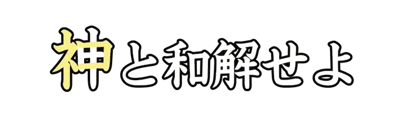 |
ねこ | かわいいね |
| Lv02_Ca014_0024 | いぬ | テストの答案などで間違えないよう注意。 | |
| Lv02_Ca014_0025 | あいどる | 崇拝される人や物。特に、恋愛感情を持つファンが多くいる歌手やタレントのこと。 | |
| Lv02_Ca014_0026 | 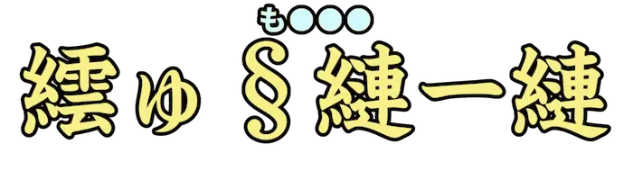 |
もじばけ | 繧ｳ繝ｳ繝斐Ｈ繝ｼ繧ｿ縺ｧ縲∽ｽ輔ｉ縺九?蜴溷屏縺ｫ繧医ｊ蜈??譁?ｫ?縺ｨ縺ｯ逡ｰ縺ｪ繧区枚蟄励 |
| Lv02_Ca014_0027 | 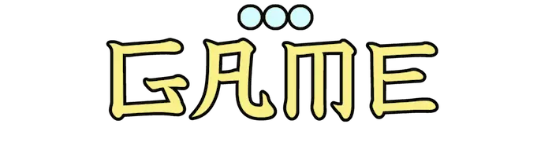 |
げーむ | 勝ち負けを重視した遊びの総称。また、スポーツなどの試合のこと。 |
| Lv02_Ca014_0028 | 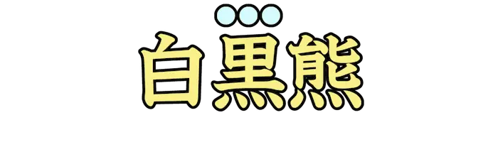 |
ぱんだ | クマ科の動物。『パンダ』とつく動物では、レッサーパンダの方が先に発見されてるよ。 |
| Lv02_Ca014_0029 | なう | 流行に乗っていることを表す若者言葉。この言葉自体はナウくない。 | |
| Lv02_Ca014_0030 | 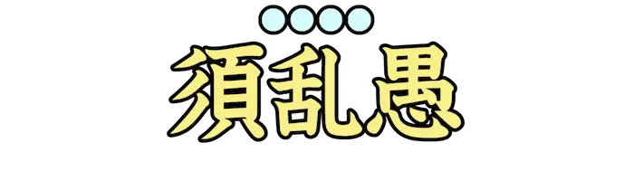 |
すらんぐ | あるコミュニティだけで限定的に用いられる言葉で、特にネット用語や若者言葉を指す。 |
| Lv02_Ca014_0031 | びぶらーと | 声の高さを周期的に上下させる歌唱技術。カラオケ採点の加点対象などに使用される。 | |
| Lv02_Ca014_0032 | だんご | ルビが団子に見えることから。 | |
| Lv02_Ca014_0033 | ものくろ | 単一の色で図画などを描くこと。『モノクローム』とも。 | |
| Lv02_Ca014_0034 | だいそうげん | ネットスラングで、大爆笑しているさま。『w』の文字列が草原に見えることから。 | |
| Lv02_Ca014_0035 | 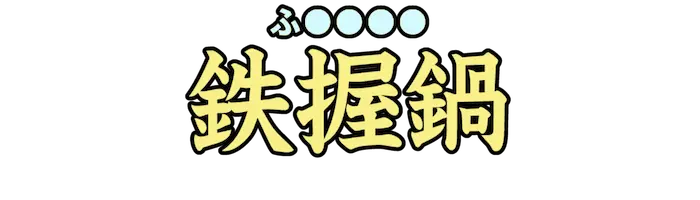 |
ふらいぱん | 炒めものやフライ料理などに使う、柄がついて底が浅くて平たいなべ。 |
| Lv02_Ca014_0036 | 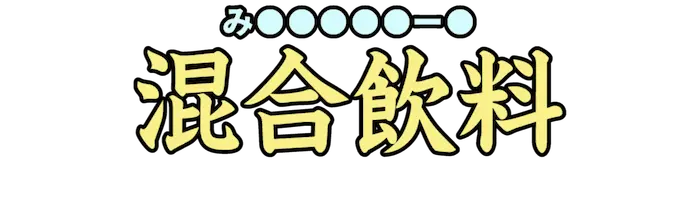 |
みっくすじゅーす | 複数種の果汁や牛乳を混ぜ合わせて作られるジュースの総称。 |
| Lv02_Ca014_0037 | 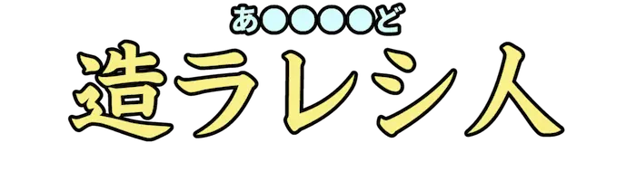 |
あんどろいど | 人型ロボットなど、人間を模した機械や人工生命体の総称。 |
| Lv02_Ca014_0038 | 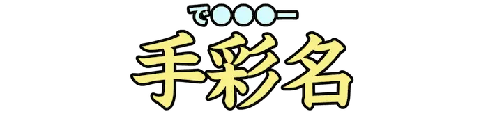 |
でざいなー | 意匠計画や図案、設計を手掛ける人。 |
| Lv02_Ca014_0039 | しーど | トーナメントで、初期の段階の試合を免除された者が含まれた対戦。 | |
| Lv02_Ca014_0040 | 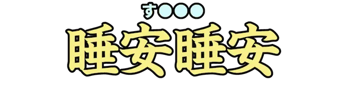 |
すやすや | 静かに気持よく寝入っているさま。 |
| Lv02_Ca014_0041 | 無。虚無。『 |
||
| Lv02_Ca014_0042 | 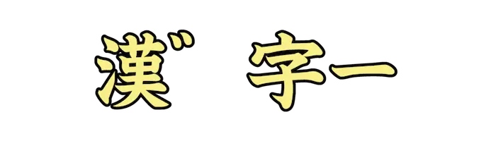 |
がんじー | インド独立の父として知られる活動家。漢字とはあまり関係ない。 |
| Lv02_Ca014_0043 | ねお | 睡眠欲に抗えず、ＳＮＳやゲーム中などに睡眠に入って…しま…ｚｚｚ | |
| Lv02_Ca014_0044 | くろす | 神の御心宿り給う聖十字。 | |
| Lv02_Ca014_0045 | 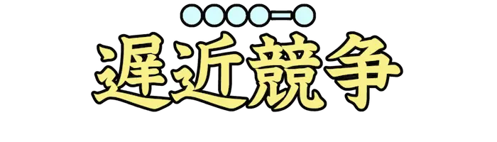 |
ちきんれーす | 障害物に向かい衝突寸前まで車を走らせ、先に止まったほうを臆病者とするレース。 |
| Lv02_Ca014_0046 | ぴった | 隙間なくくっついているさま。少しの狂いもないこと。ジャストミート。 | |
| Lv02_Ca014_0047 | つぼ | 笑いのツボに入り、特に笑えてくる。周りと比べて、自分がやけに笑っている。 | |
| Lv02_Ca014_0048 | 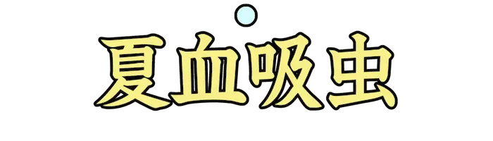 |
か | ハエ目カ科の昆虫の総称。現在最も多くの人間の命を奪っている動物。 |
| Lv02_Ca014_0049 | め | 出される問題の文字の差異によって、『つ』が小文字に見えることから。 | |
| Lv02_Ca014_0050 | 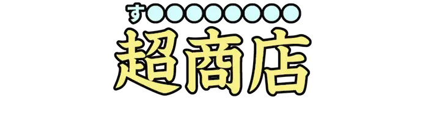 |
すーぱーまーけっと | 力を超越した者しか入店することのできない、極限の小売業態の施設。 |